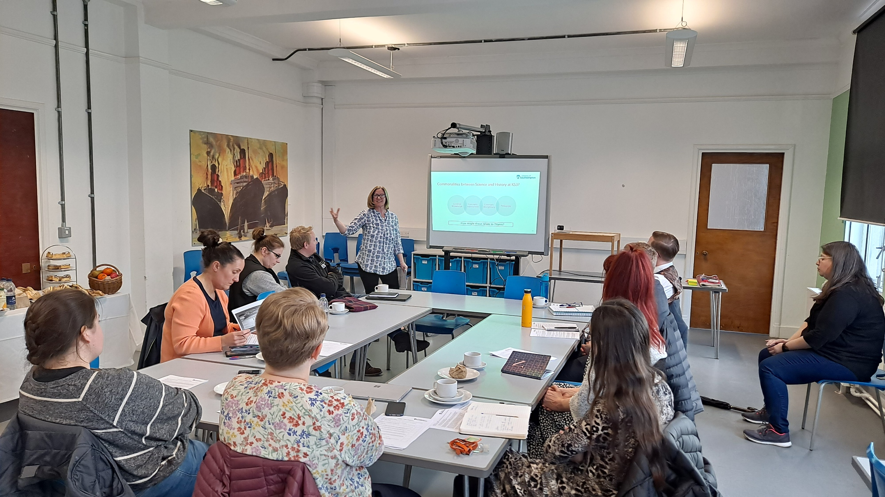
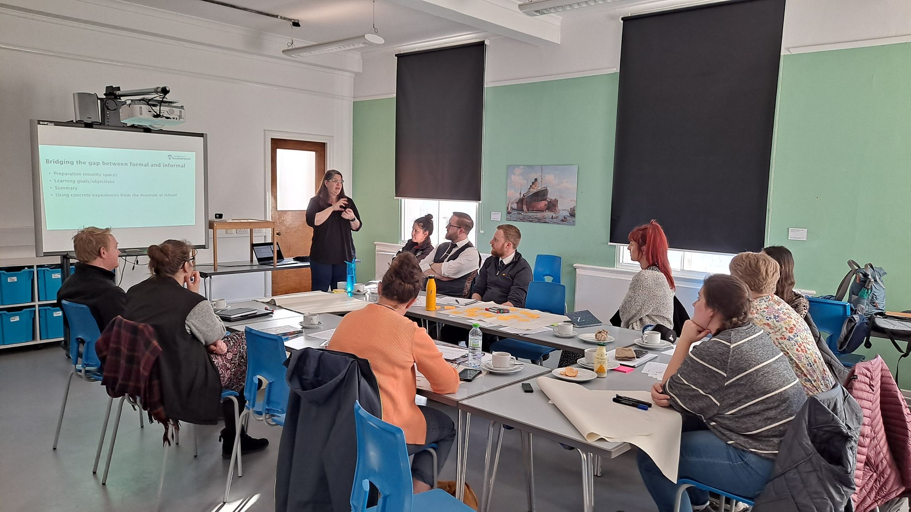
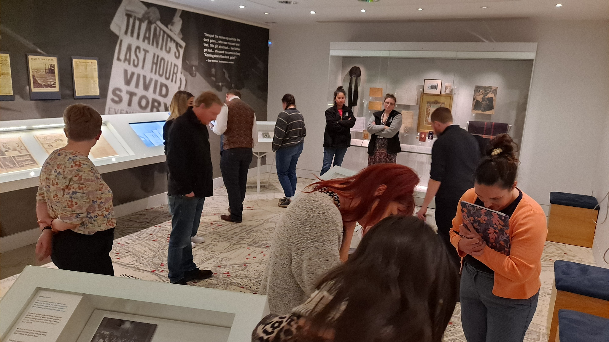
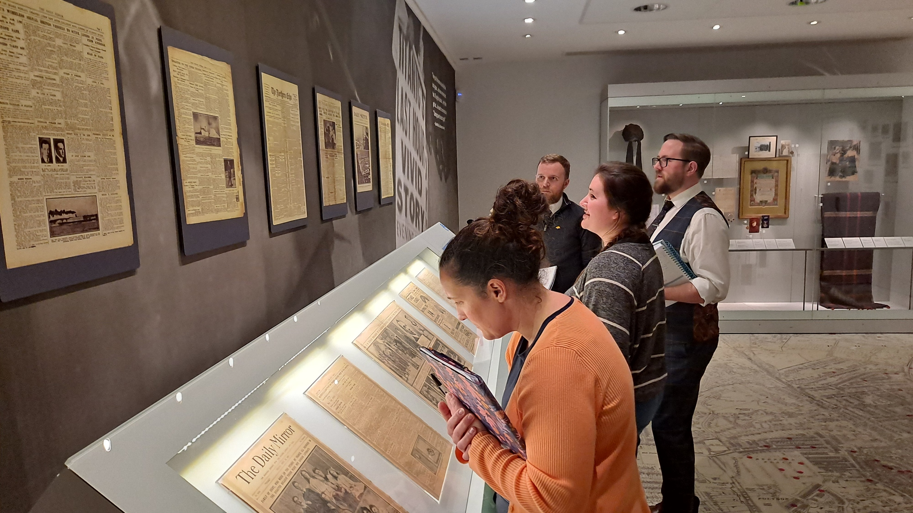
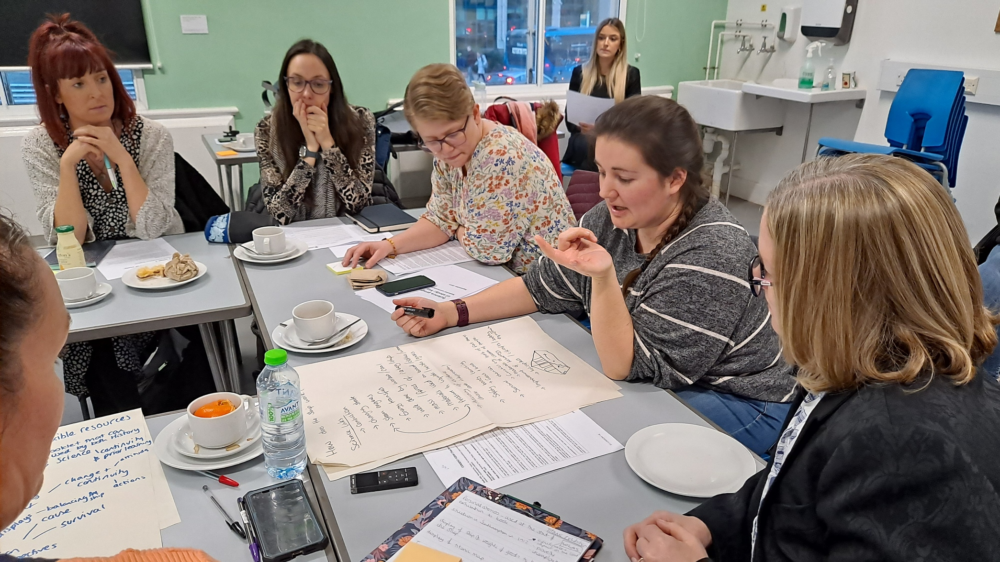
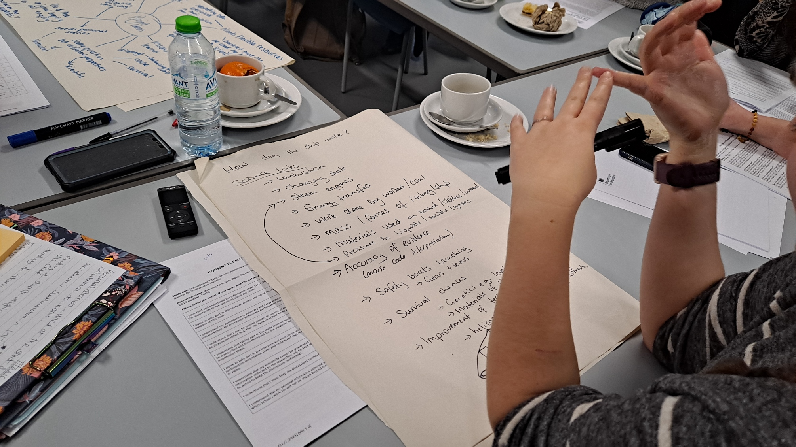

Summary
Learning about local history can strengthen place attachment and civic engagement, while also offering pupils authentic experiences of "doing history". At the same time, there is growing recognition of the value of informal and outdoor learning environments in the curriculum.
Focusing on the local history of RMS Titanic and Southampton, this project worked with history and science teachers, Key Stage 3 pupils (ages 11–14), and museum educators to develop and pilot a curriculum unit that integrates formal and informal learning.
Objectives
- Develop and pilot a curriculum unit on the history of Titanic and Southampton for Key Stage 3 learners.
- Support cross-curricular collaboration between history and science teachers.
- Integrate museum-based and other informal learning opportunities into classroom teaching.
- Strengthen pupils' place-based understanding through local history learning.
Team
- Wonyong Park, University of Southampton (Principal Investigator)
- Neta Shaby, University of Southampton (Co-Investigator)
- Rachele Newman, University of Southampton (Co-Investigator)
- Tilly Scotthorne, University of Southampton (Research Assistant)
Presentations
- Park, W. (2023, November). From Titanic to Sewol: Science education, resilience and disaster justice. Society for Social Studies of Science (4S). Honolulu, HI, USA.
- Park, W., Shaby, N., & Newman, R. (2024, January). Integrating science and history learning: The Remembering Titanic project. Association for Science Education (ASE). Northampton, UK.
- Park, W. (2024, June). Using community history as a vehicle for cross-curricular teacher development: The Remembering Titanic project. Co-Designing Instruction for Innovative Education: The Power of Educator–Academic Partnerships Towards Societal Change. University of Southampton.
Publications
- Park, W. (2024). Remembering Titanic: Lessons from a cross-curricular professional development project with science and history teachers. Education in Science, 294, 22–23. https://www.ase.org.uk/resources/education-in-science/issue-294/remembering-titanic
- Park, W., Shaby, N., & Newman, R. (2025). "We often forget it was a disaster": Cross-curricular teacher collaboration to develop a curriculum unit on the Titanic disaster. Science & Education. https://doi.org/10.1007/s11191-024-00540-0
Links
Gallery






Use the left and right arrow keys to navigate the images.